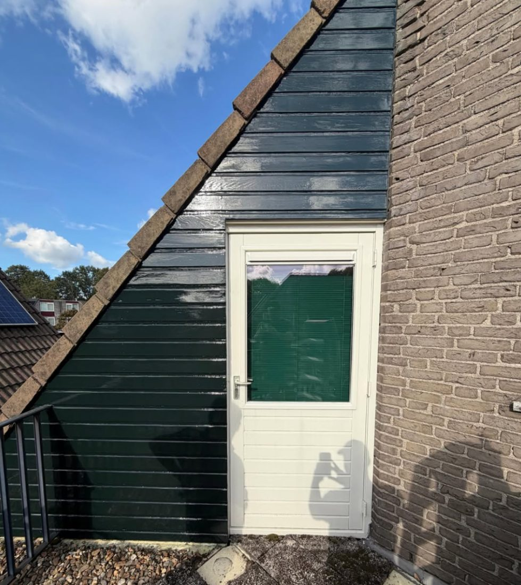

Soest
Karakter behouden, kwaliteit vernieuwen
Buitenschilderwerk en afwerking van woning en bijgebouw: van de witte gevels en de donkere plint tot de karakteristieke kozijnen, ramen en deuren.
Interieur en exterieur: schilderwerk, vastgoedonderhoud, houtherstel, glasvervangen en kitwerk. Vakwerk met een stevige basis.



Van een nieuwe laag verf tot een vervangen ruit: dit zijn de werkzaamheden van NXTGOAL Projecten.
Strak en professioneel schilderwerk, binnen en buiten.
Meer wetenDuurzaam onderhoud voor woningen en panden.
Meer wetenDuurzaam herstel voor een sterke basis.
Meer wetenRuitjes en ruiten vervangen en netjes afgewerkt.
Meer wetenStrakke afwerking en optimale bescherming.
Meer wetenPast je klus er niet precies tussen? Stuur een berichtje, dan kijken we wat er kan.
Offerte aanvragenWij kleuren jouw projecten, dus probeer het zelf even uit. Kies een onderdeel en tik op een kleur.
Een speels voorbeeld, geen offerte. Benieuwd naar jouw woning? Vraag een vrijblijvende offerte aan.
Een paar projecten uit de buurt van Utrecht, rechtstreeks van het Instagram-profiel van NXTGOAL Projecten.
Buitenschilderwerk en afwerking van woning en bijgebouw: van de witte gevels en de donkere plint tot de karakteristieke kozijnen, ramen en deuren.
Puntgevel en deur afgeschilderd met Sikkens Rubbol XD High Gloss. Het donkergroen met de lichte deur geeft de gevel een frisse, verzorgde uitstraling.
Buitenschilderwerk van kozijnen, ramen en deuren, afgewerkt met Sikkens XD High Gloss voor diepe glans en duurzame bescherming.
Bel 06 13 30 95 66, stuur een DM of vul het formulier in.
Je weet waar je aan toe bent, zonder verplichtingen.
Strak, nauwkeurig en met oog voor detail.
De werkplek laten we schoon en netjes achter.
Strak en professioneel schilderwerk, met oog voor detail.
Persoonlijk contact en een heldere, vrijblijvende offerte.
Je weet waar je aan toe bent.
Alles weer schoon en strak achtergelaten.
Vakwerk met een stevige basis.
Dit zijn plaatsen waar NXTGOAL Projecten recent werk heeft gedaan. Twijfel je of je klus in het gebied valt? Bel of stuur een berichtje.
Bel, stuur een DM of vul het formulier in. Je offerte is vrijblijvend.